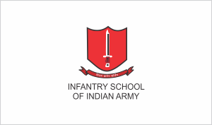
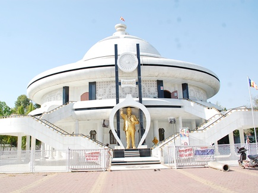
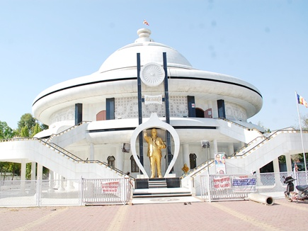

Climate
Cantonment
As early as 1818, the Indian Army has had a presence in Mhow. Up until World War II, Mhow was the headquarters of the 5th Division of the Southern Army. According to local legend, Winston Churchill also spent a few months in Mhow when he was a subaltern serving with his regiment in India. The house on the mall where he is supposed to have lived, gradually crumbled due to neglect and age. It was pulled down and a jogger's park has been built on its grounds by the Infantry School.Mhow houses three premier training institutions of the Indian Army; The Infantry School, The Military College of Telecommunication Engineering (MCTE) and The Army War College.
In addition to these institutes, Mhow is where Army Training Command or ARTRAC was born. ARTRAC was based in Mhow from 1991 to 1994, before it shifted to Shimla (Himachal Pradesh). At that time its General Officer Commanding in Chief (GOC-in-C) was Lt. General Shankar Roy Chowdhary who went on to become the Chief of Army Staff (COAS). Its first GOC-in-C was Lt. General A.S. Kalkat who had earlier commanded the Indian Peace Keeping Force (IPKF) in Sri Lanka. ARTRAC was housed in the campus of the present Army School. This was used as All Arms Wing of MCTE for many decades. It was originally built and used as the British Military Hospital (BMH).
The Infantry School
 The Infantry School is a training establishment of the Indian Army. It is responsible for the training of officers and infantry. The Commando Wing of this school is in Belgaum, Karnataka. The Army Marksmanship Unit (AMU) is a part of the Infantry School and has produced many medal winning shooters. Field Marshal Sam Manekshaw was the first Indian Commandant of this school in 1955-56 when he was a Brigadier.
Military College of Telecommunication Engineering (MCTE)
The first training institution in Mhow, MCTE was known as the School of Signals till 1967. It is the alma mater of the Corps of Signals. MCTE conducts telecommunications and information technology courses for officers, JCOS, NCOs and soldiers of the Indian Army. Officers and men from other countries also attend courses there. It also trains gentlemen cadets for a bachelor's degree in engineering at the Cadets Training Wing (CTW). On completion of their training, most of the cadets get commissioned into the Indian Army's Corps of Signals, however, some are also commissioned into other branches.
The Army War College
Army War College, Mhow (AWC) is a tactical training and research institution of the Indian Army. It develops and evaluates concepts and doctrines for tactics and logistics. The college trains about 1,200 officers, as well as paramilitary forces each year.
The college was originally established as the College of Combat at Mhow on April 1, 1971. It was spun out of the Infantry School, Mhow. It continued to operate from the campus of the Infantry School until 1988, when the college moved to its new campus. In 2003, the college was renamed as the Army War College, Mhow.
The College mainly conducts three courses—the Junior Command (JC) course, the Senior Command (SC) course and the Higher Command (HC) course. The former Chiefs of Army Staff (COAS) General K. Sundarji and General V. N. Sharma have served as the Commandant of the College. The present commandant is Lt Gen Rajeev Tewari, PVSM, AVSM.
 
